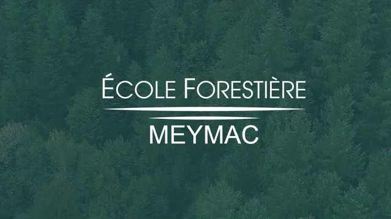

La Fête de la Forêt a été organisée par le Lycée Forestier de Meymac, en particulier la classe de BTS Gestion Forestière 2ème année, avec l’aide des différents acteurs des pôles et le soutien de partenaires. Venez découvrir les stands, animations et innovations qui mettent en valeur la forêt et ses métiers.

Utilisez la carte interactive pour localiser les stands et cliquez sur les points pour plus d’informations.
Retrouvez ici les informations détaillées sur chaque pôle et stand pour découvrir les animations, démonstrations et acteurs présents lors de la Fête de la Forêt.
Découvrez les différents partenaires de la Fête de la Forêt, échangez avec eux et profitez de leurs animations et informations tout au long de l’événement.
Faites une pause gourmande et profitez des différentes options de restauration proposées sur place.
Promenez‑vous parmi les stands et découvrez des produits locaux, artisanaux et des créations originales.
En cas de besoin, notre équipe de secours est là pour vous assister rapidement et assurer votre sécurité tout au long de l’événement.
Découvrez les acteurs de la lutte contre les incendies avec le SDIS 19 et ses véhicules d’intervention, l’ONF et la DDT. Consultez les cartes de la DFCI et participez à l’activité « lance à incendie » pour vous mettre dans la peau des secours.
Plongez dans le monde de la construction bois ! Découvrez les charpentes et techniques avec Bort‑Artence, LMB Felletin, Bois PE, Yann Acrbois et Ambiance Bois, et admirez la charpente de présentation prêtée par les Compagnons du Tour de France.
Assistez à une démonstration de timbersport avec le club Les Cogneur du Plateau et découvrez le savoir‑faire du tronçonnage et du travail du bois en direct.
Participez à un jeu de rôle interactif où vous prenez des décisions face à différents événements. Posez des jetons pour montrer votre accord ou désaccord et contribuez à créer votre forêt idéale, tout en découvrant les enjeux de la gestion forestière et de la biodiversité.
Découvrez les techniques de préservation et d’exploitation durable des forêts avec Nicolas Bernard, qui présentera des démonstrations de débardage à cheval. Découvrez également les équipements pour l’élagage avec DS Nature (fabrication et vente de perches d’élagage), ainsi que les initiatives de Anatef et Prosylva.
Découvrez les dernières innovations pour faciliter la gestion forestière avec Xylofuture, Propriété Forestière, CNPF, CFBL, Alliance Forêt Bois, Pixstart, Forestry France et Forest Logistique Conseil. Explorez des outils et solutions pour améliorer la prise de décision et soutenir les pratiques durables.
Découvrez les pratiques et solutions pour rendre les forêts plus résilientes face au changement climatique. Une vidéo de 30 minutes sera présentée à l’amphithéâtre, suivie d’une demi‑heure d’échanges avec des acteurs experts, qui répondront à vos questions et discuteront des enjeux d’adaptation et de durabilité des forêts.
Découvrez le cycle complet de la filière bois, du semis des arbres à la transformation et à l’utilisation finale. Rencontrez les acteurs : l’Association du GDF de Millevache, l’Association des Apprentis Forestiers, l’Association ADAF, Sylvain Nocaudie, Mikael Michoux, Anne Gillet et Farges. Apprenez comment le bois passe de la forêt à votre habitat.
Découvrez les innovations qui transforment les métiers de la forêt : démonstrations de machines, exosquelettes et équipements modernes. Rencontrez les acteurs présents : Ponsse, un exploitant forestier (Arnaud RBC), CFBL, FCBA, HBR Innovation, Husqvarna, Destination Forêt et l’atelier technologique de l’École Forestière.
Découvrez toutes les animations de la journée ! Cliquez sur une section pour voir les détails, horaires et lieux.
| Horaire | Titre de la conférence |
|---|---|
| 10h30 - 11h30 | Vidéo : Pôle Adaptation aux changements climatiques |
| 11h30 - 12h30 | Résultat de thèse M. Lemaire |
| 13h30 - 14h00 | Pixstart : Numérisation de la filière |
| 14h00 - 15h00 | Vidéo : encore |
| 15h00 - 16h00 | Forestry France nouvelles technologies face aux risques |
| Horaire | Salle de reunion | Salle GEFI |
|---|---|---|
| 11h00 - 11h30 | Forestery France nouvells technologies face aux risques |
|
| 11h30 - 12h00 | Xylofuture | Télédétection de l’EF |
| 14h00 - 14h30 | Bioclim Sol par CNPF | Formation de l’Ecole Forestière |
| 14h30 - 15h00 | Propriété Forestière.com | ADAF, association de propriétaire |
| 15h00 - 15h30 | Forêt Logistique Conseil | Présentation de la charte forestière |
| 15h30 - 16h00 | Woodwatch pixstart | Présentation PEFC |
| 16h00 - 16h30 | CFBL | Formation adulte du CFPPA |
| Horaire | Animation |
|---|---|
| 11h00 - 11h30 | Démonstration d'abatteuse et porteur |
| 12h00 - 12h30 | Démonstration d'abatteuse et porteur |
| 14h00 - 14h30 | Démonstration d'abatteuse et porteur |
| 15h00 - 15h30 | Démonstration d'abatteuse et porteur |
| Horaire | Info |
|---|---|
| 10h30 - 11h30 | 2 salle, 2 jeux de rôles |
| 11h30 - 12h30 | 2 salle, 2 jeux de rôles |
| 14h00 - 15h00 | 1 salle, 1 jeu de rôles |
| 15h00 - 16h00 | 1 salle, 1 jeu de rôles |
| 16h00 - 17h00 | 1 salle, 1 jeu de rôles |
| Horaire | Animation |
|---|---|
| 11h00 | Présentation SDIS 19 |
| 11h30 | Démonstration lutte incendie |
| 13h30 | Présentation par l'ONF |
| 14h30 | Présentation SDIS 19 |
| 15h30 | Présentation par l'ONF |
| 16h00 | Démonstration lutte incendie |
| Horaire | Animation |
|---|---|
| 10h00 - 10h30 | Présentation de l'activité de Yann Acrobois |
| 11h00 - 11h30 | Monté une charpente |
| 11h00 - 12h00 | Conférence BoisPE sur la construction bois |
| 14h00 - 14h30 | Présentation de l'activité de Yann Acrobois |
| 14h30 - 15h00 | Monté une charpente |
| 15h00 - 16h00 | Conférence BoisPE sur la construction bois |
| 16h00 - 16h30 | Monté une charpente |
| 16h30 - 17h00 | Monté une charpente |
Partagez votre expérience et aidez-nous à améliorer les prochaines éditions de la Fête de la Forêt.